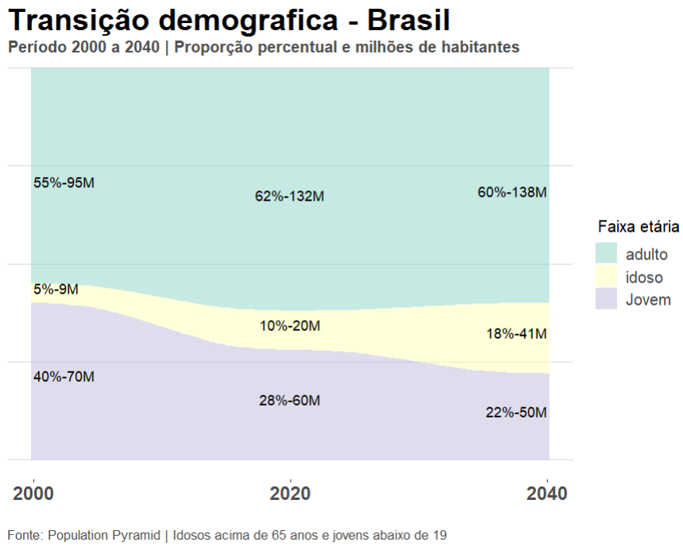
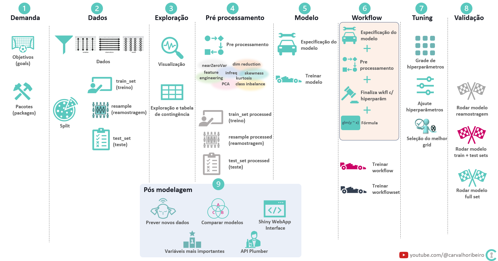

Motivação para o blog
Por que este blog e este canal no YouTube ?
Em 2040 o Brasil terá uma população mais urbana e mais madura. A necessidade de aumento de produtividade no país estará em rota de colisão com a demanda por mão de obra qualificada em países desenvolvidos que estarão com suas populações diminuindo.
O objetivo do canal e do blog é tentar auxiliar na melhoria de processos para que estejamos mais preparados quando chegarmos em 2040.

Como serão divididos os tópicos ?
Demanda, definição do problema, objetivos e métricas de sucesso - Contém a origem e tipos de necessidade que é o que torna todo o restante do trabalho necessário.
Dados - Contém conceitos com o objetivo de estimular a observação, abstração e entendimento sobre o que são dados.
Ferramentas - Contém ferramentas como R(RStudio), Oracle SQL*plus, Oracle SNO, SPSS, Sphinx, Qlikview, PowerBI e excel.
Exploração - Contém visualização de dados, análise exploratória, tabelas, queries, planilhas de excel, folhas de verificação etc.
Modelos - Contém alguns tipos de modelos descritivos, preditivos, inferenciais, otimização entre outros.
Versionamento e Reprodutibilidade - Contém processos para desenvolvimento de documentos reproduzíveis usando versionamento
github, git, criação de documentosquarto_pub e rmardown, criação de livrosbookdownentre outros.Comunicação - Contém abordagens sobre comunicação das estatísticas e relatórios técnicos.
Aplicação - Contém histórico de ações e aplicações dos projetos.

Como será divido cada post ?
Em 2001 para facilitar o entendimento dos profissionais da operação em industria eu escolhi um padrão que ao longo do tempo vem se mostrando eficiente e utilizarei aqui.
O que é : qual a ideia do que está sendo abordado ?
Qual o objetivo : por que isso está sendo ou foi desenvolvido ?
De onde vem : quais as necessidades ou origem dessa demanda ? A motivação ?
Como fazer : qual o procedimento, código, sequência ou fluxo ?
Pra onde vai : quem é o consumidor disso ? Qual a aplicação prática ?
Qual o resultado : descrição dos resultados previstos ou comprovados.
Referencia: Transição demográfica Brasil e Japão